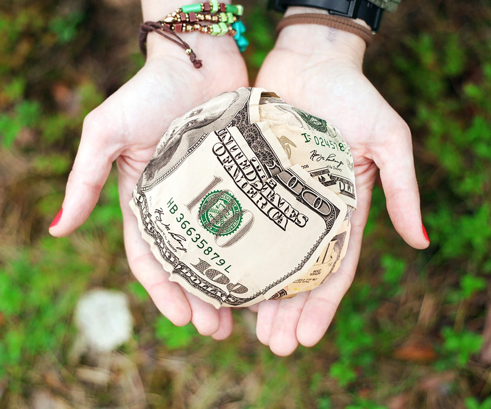

World Vision India is dedicated to improving the lives and futures of India’s most vulnerable children. We do this by partnering with communities at the grassroots, supporters in India and across the world, civil society, corporates and the local and national governments to create an environment where all children are educated, healthy, protected and valued. Our work is facilitated through Area Development Programmes (ADPs). This model of development involved long-term engagement in a geographical area (usually contiguous) to transform lives of children and communities. When an ADP is begun, we assess the needs of the community and create a collaborative plan based on the community’s vision for its children. Together, we look at what’s already being done, what more can be done, and what we can do together. We work through programmes focused on ensuring access to nutrition, healthcare, water and sanitation, quality education and livelihood for the sustained well-being of children. Ensuring a secure childhood is paramount to our work, which we strive to fulfil by building communities that are safe and fit for children. World Vision India brings life-saving support in times of disaster. We are committed to long-term rehabilitation, helping communities affected by natural disasters or conflicts get back on their feet. We also work to make vulnerable communities more resilient so they can respond immediately if disasters occur.

sparks foundation
